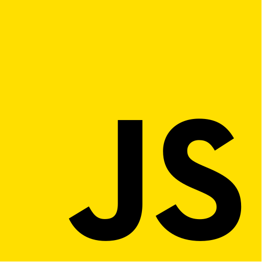
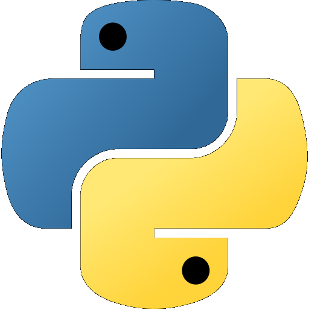
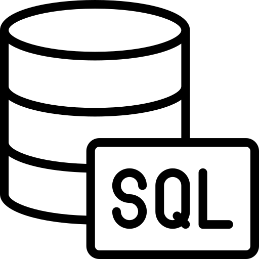
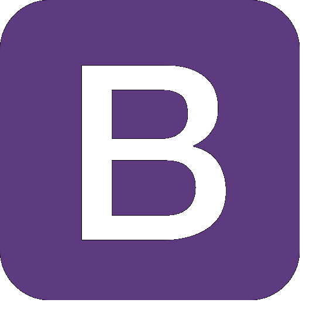

Skills
Throughout my 3 years of coding experience I had mastered the following skill set.
-

HTML5
-

CSS3
-
SCSS
-

JS ES6
-

TS
-

Python
-

GIT
-

SQL
-

React
-

Bootstrap


Facts
Plus Contributions on GitHub since 2020
Plus years of Coding Experience
Repositories on GitHub
About

University Graduate & Software Development.
I had always been pasionate about problem solving and striving for knowledge. With 25 years old I had had
a constant education. As a teenager, I graduated from a billingual high school
in English and Spanish. Later I did a cultural exchange to master my level of English and learn some
German. In 2017 I started University, obtaining a Bachelor of Science
and a Master of Biology . It was during the pandemic, that I realized I didn't want to pursue and academic
career in this field.
So eventhough I love biology I ventured into coding and software development 3 years ago. Luckily I had a
lot of related subjects in University that gave me a good start
such as: Mathematics I & II, Physics I & II, Statistics I & II, Population ecology, Population Genetics
and final thesis. In the latter three I had a lot of R, Python and statisitics.
In 2020 I enrrolled in University's courses and bootcamps on Edx such as: Computional Thinking, Python
absolute beginner and udemy courses
like Python Data Science, Algorithms and Data Structures and SQL.
In 2021, I found web development and I loved the combination of design and logic that makes beautiful
web sites. I enrolled in a JavaScript course
and web development (HTML and CSS) course. Also I did the entire freeCodeCamp.com Javascript ES6 and web
development portfolio curriculum.
In 2022, I started doing several proyects that you can see in my portfolio. This proyects allowed me to
understand the concepts of modular programming, scalability
error debuging, code testing, names conventions, good commenting and exponentially increased my coding
skills. Some of this proyects are done in SCSS and TS.
After acquaring a proficient level in JS, CSS and HTML I learned react and I built a fully functional
ecommerce that uses FireBase for backend services.
Furthermore I have the habit of watching coding related videos daily, watching professional developers
work is an excellent form of learning and obtaining good practices.
Finally in the achievement section you can read about my sports, hobbies and volunteering accomplishments.
Resume
Education
Billingual High School
2002 - 2015
Academic Score: 8,6/10
Saint Patrick Billingual School, Cordoba, Argentina
This very pretigious school offers an excelent education in languajes, maths and computing. For more than 8 years I wrote essays and did lecture comprehension daily in English.
EF certificate - C2.3 English and A2.1 German
2017 - 2017
Education First in Dublin, Ireland and Munich, Germany
I spent 4 months in Dublin and 4 months in Munich at Education First's intensive languaje course school achieving the highest level of English (C2.3) and a basic german level (A2.1).
Bachelor of Science
2017 - 2020
Academic Score: 7.8/10
National University of Cordoba, Cordoba, Argentina
This prestigous University is also the oldest in Latin America (1610). During the Bachelor I passed the following related subjects: Maths I & II, Statistics I & II, Computation I & II, Physics I & II
Master of Biology
2020 - 2022
Academic Score: 8.3/10
National University of Cordoba, Cordoba, Argentina
My thesis for this masters had over 900 lines of code in Python to manipulate and analyse data and make several technical graphs, charts and plots. I passed the following related subjects (statisitically heavy): Population genetics, Ecology ,Population ecology, Taxonometry
Courses
Computational Thinking
2020 | EdX Microsoft
Python: Absolute Beginner
2020 | EdX Microsoft
PYTHON DATA SCIENCE, ALGORITHMS AND DATA STRUCTURES
2020 | Udemy by Kirill Eremenko
Javascript
2021 | Coder House
Blockchain Technology and Bitcoin
2021 | Technical University of Buenos Aires
Web Development - HTML / CSS
2022 | Coderhouse
React
2022 | Coderhouse
SQL
2023 | Coderhouse
Work Experience
Junior Administrator
EF Education First | 2017 - 2018
EF Education First
After my student experience at EF, I was offered this position. I quitted due to University. General office management, Dealing with email enquiries, Diary management and arranging appointments, booking meeting rooms and conference facilities , Arranging both internal and external events, Providing administration support to Sales Reps and Senior ManagementResearch Assistant
IMMF - Medical Research | 2019 - 2020
Research assistant at the department of Neurology in charge of Gustavo Pigino As the only assitant I had to organize, clean and administrate a prestigious lab in decline and make it a optimal research center During my stay I conducted numerous experiments that concluded in a Congress and a future research Paper
Server at Courchevel - Tallisker
Park City, Utah | 2021 - 2022
Tallisker is a huge real estate company in the US. Tallisker members can enjoy a very classy members lounge at Courchevel restaurant. I was the main server and bartender of the members. Gaining a lot of social skills, time efficiency and important networking. The latter was my main goal for this job.
Snowboard Instructor
2021 - present
Snowboarding is my favorite sport, and as I became very good at it, I gave several snowboarding lessons. Establishing a good networking with my clients.
Achievements
Throughout my life I had accomplished several milestones related to sports, academy and social impact.
Bishop University Admission and Scholarship in Quebec Canada
Bishop Scholarship | Feb 2020
I got admitted to Bishop University and then won a scholarship to study for a semester. Sadly, it got cancelled due to Covid-19 pandemic
Third Place in Villa Maria Sprint Thriatlon
Thriatlon | 2019
Before this thriatlon, my maximum athletic achievment was running 5km. With 3 weeks of preparation I finished third. I already knew how ride a bike but I had to learn how to properly swim. The key was consistency, good training and a prepared mindset (positive and self-competitive) Category: MTB Male under 22. After this I completed 2 half marathons under 2 hours
Founder Ciudadanos de Cordoba
Citizens of Cordoba | 2020-2021
Award Winning Journalistic Proyect owned and operated only by me. It interviewed great citizens of cordoba and posted said interviews in 500 words essays in its blog and social media. Its goal is to generate admiration, inspiration and motivation amongs my countrymen
Sat Exam Score: 1400 / 2000
San Patrick's | 2016
I got admitted to Bishop University and then won a scholarship to study for a semester. Sadly, it got cancelled due to Covid-19 pandemic
TOEFL Exam Score: 99 / 120
San Patrick's | 2015
I got admitted to Bishop University and then won a scholarship to study for a semester. Sadly, it got cancelled due to Covid-19 pandemic
Founder: Sustainable river
Rio Sustentable | 2020 -Present
Founder of Rio Sustentable in Cordoba. We transformed a garbage-overrun river into the second Natural Reserve in the City by cleaning it up every Saturday morning. It had over 400 members
First place in " Domingo Faustino Sarmiento " essay contest
Essay | January 2015
I was the winner of an essay contest issued by the Royal Spanish Academy. The essay was about the clash of civilization and barbarism in 1870s Argentina's
OAJNU Participant
OAJNU | 2016
An United Nations simulation for high school students done each year in my province
AFS Volunteer
American Field Service | 2017
AFS is an intercultural exchange non profit organization which whom I volunteered for 3 months in the Administration Department
Contact
Dear potential employers and interviewers, I welcome the opportunity to connect and explore how my web development skills can complement your organization. With a strong foundation in front-end technologies, coupled with a dedication to creating engaging and accessible web experiences, I'm confident in my ability to contribute to your team's success. Please feel free to reach out through the contact details provided below. Thank you for considering my application, and I look forward to the opportunity.